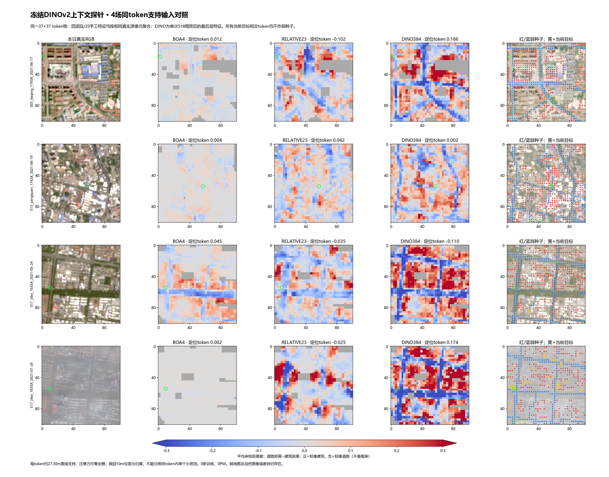
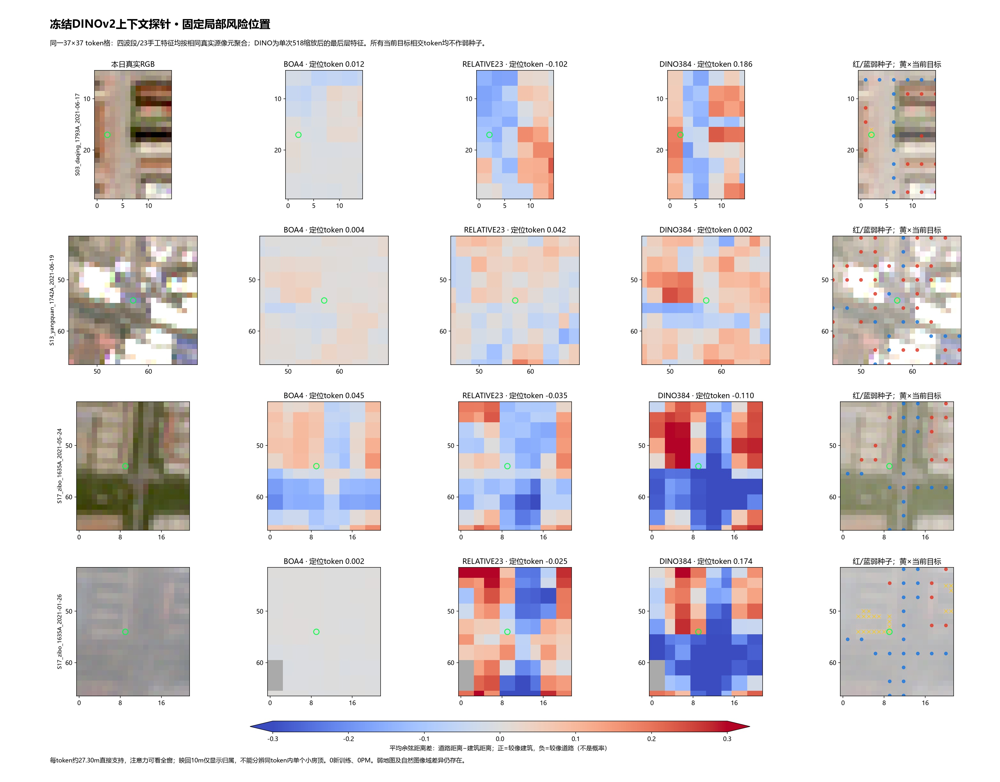

0新训练、0PM。四带与23特征均聚合到相同27.30m token支持；同场弱标签可分性提高，单个小屋顶仍有混合风险。
结果与局限 · 冻结方案 · 公开模型与环境 · 全部当前对象 · 固定风险位置
| representation | BOA4 | DINO384 | RELATIVE23 |
|---|---|---|---|
| case | |||
| S03_daqing_1793A_2021-06-17 | 0.7392 | 0.8921 | 0.7736 |
| S13_yangquan_1742A_2021-06-19 | 0.6895 | 0.8091 | 0.7505 |
| S17_zibo_1635A_2021-01-26 | 0.7459 | 0.9204 | 0.7114 |
| S17_zibo_1635A_2021-05-24 | 0.8506 | 0.9335 | 0.7750 |

